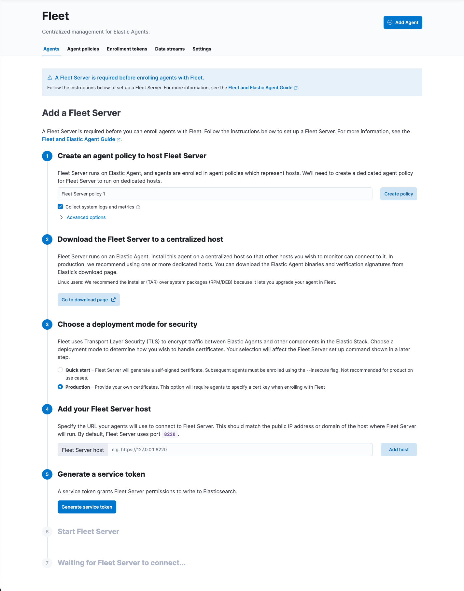

Add a Fleet Serveredit
To use Fleet for central management, a Fleet Server must be running and accessible to your hosts. This page describes how to add a Fleet Server to an Elastic Cloud or self-managed deployment.
Compatibility and prerequisitesedit
Fleet Server is compatible with the following Elastic products:
-
Elastic Stack 7.13 or later (hosted Elasticsearch Service on Elastic Cloud, or a self-managed cluster).
- For version compatibility: Elasticsearch >= Fleet Server >= Elastic Agent (except for bugfix releases)
- Kibana should be on the same minor version as Elasticsearch.
- Elastic Cloud Enterprise 2.9—requires you to self-manage the Fleet Server.
-
Elastic Cloud Enterprise 2.10 or later—allows you to use a hosted Fleet Server on Elastic Cloud.
-
Requires additional wildcard domains and certificates (which normally only
cover
*.cname, not*.*.cname). This enables us to provide the URL for Fleet Server ofhttps://.fleet.. - The deployment template must contain an Integrations Server node.
For more information about hosting Fleet Server on Elastic Cloud Enterprise, refer to Manage your Integrations Server.
-
Requires additional wildcard domains and certificates (which normally only
cover
How to add a Fleet Serveredit
The steps for running Fleet Server on our hosted Elasticsearch Service on Elastic Cloud are different from the steps for running it as self-managed.
When using our hosted Elasticsearch Service, it’s recommended that you use our hosted version of Integrations Server. However, you can choose to deploy and self-manage your own Fleet Servers or add an extra self-managed Fleet Server in addition to our hosted one.
Elastic Cloud runs a hosted version of Integrations Server that includes Fleet Server. No extra setup is required unless you want to scale your deployment.
To confirm that an Integrations Server is available in your deployment:
- In Kibana, go to Management > Fleet.
- On the Agents tab, look for the Elastic Cloud agent policy. This policy is managed by Elastic Cloud, and contains a Fleet Server integration and an Elastic APM integration. You cannot modify the policy. Confirm that the agent status is Healthy.
Don’t see the agent? Make sure your deployment includes an Integrations Server instance. This instance is required to use Fleet.

To deploy a self-managed Fleet Server, you install an Elastic Agent and enroll it in an agent policy containing the Fleet Server integration.
You can install only a single Elastic Agent per host, which means you cannot run Fleet Server and another Elastic Agent on the same host unless you deploy a containerized Fleet Server.
- In Kibana, go to Management > Fleet > Settings. For more information about these settings, see Fleet settings.
-
Under Fleet Server hosts, click Edit hosts and specify one or more host
URLs your Elastic Agents will use to connect to Fleet Server. For example,
https://192.0.2.1:8220, where192.0.2.1is the host IP where you will install Fleet Server. Save and apply your settings. -
In the Elasticsearch hosts field, specify the Elasticsearch URLs where Elastic Agents will send data.
For example,
https://192.0.2.0:9200. Skip this step if you’ve started the Elastic Stack with security enabled (you cannot change this setting because it’s managed outside of Fleet). - Save and apply the settings.
-
Click the Agents tab and follow the in-product instructions to add a Fleet server:

Notes:
- Choose Quick Start if you want Fleet to generate a Fleet Server policy and enrollment token for you. The Fleet Server policy will include a Fleet Server integration plus a system integration for monitoring Elastic Agent. This option generates self-signed certificates and is not recommended for production use cases.
-
Choose Advanced if you want to either:
- Use your own Fleet Server policy. You can create a new Fleet Server policy or select an existing one. Alternatively you can create a Fleet Server policy without using the UI, and select the policy here.
- Use your own TLS certificates to encrypt traffic between Elastic Agents and Fleet Server. To learn how to generate certs, refer to Configure SSL/TLS for self-managed Fleet Servers.
-
It’s recommended you generate a unique service token for each
Fleet Server. For other ways to generate service tokens, see
elasticsearch-service-tokens. -
If you are providing your own certificates:
-
Before running the
installcommand, make sure you replace the values in angle brackets. -
Note that the URL specified by
--urlmust match the DNS name used to generate the certificate specified by--fleet-server-cert.
-
Before running the
-
The
installcommand installs the Elastic Agent as a managed service and enrolls it in a Fleet Server policy. For more Fleet Server commands, see Elastic Agent command reference.
If installation is successful, you’ll see confirmation that Fleet Server connected. Click Continue enrolling Elastic Agent to begin enrolling your agents in Fleet Server.
If you’re unable to add a Fleet-managed agent, click the Agents tab and confirm that the agent running Fleet Server is healthy.
Now you’re ready to add Elastic Agents to your host systems. To learn how, see Install Fleet-managed Elastic Agents.